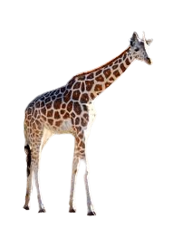
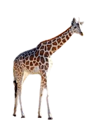

אריה (שם מדעי: Panthera leo) הוא מין של טורף גדול מהסוג פנתר שבמשפחת החתוליים, והוא השני בגודלו בין בני הקבוצה דמויי חתול, אחרי תת-המין הסיבירי של הטיגריס.

פיל הוא מונח לקבוצה פוליפילטית של שלושה מיני יונקים – פיל סוואנה אפריקני, פיל יער אפריקני ופיל אסייתי – שהם חיות היבשה הגדולות ביותר בעולם והמינים היחידים ששרדו במשפחת הפיליים.
 

לג'ירף רגליים וצוואר ארוכים מאוד. גובה כתפיו כ-3 מטרים מעל הקרקע וגובה ראשו כ־5.3 מטר מעל פני הקרקע. צבעו חום-צהוב עם כתמים כהים וגדולים. צבע זה משמש לו בתור הסוואה מאויביו.